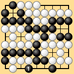
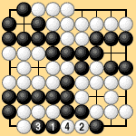
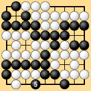
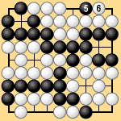
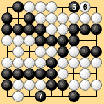

| 3.2 The Super-ko Rule (1) |
|---|
|
As the ko rule in area rules, I would like to adopt the super-ko rule. Then no repetitive cycles can occur. Even when a triple ko, round-robin ko or eternal life arises, there will be no annulled games. This is the place for a brief explanation of the super-ko rule. The super-ko rule forbids playing a stone so as to create a position (meaning the entire board position) that is identical to a position that has already occurred some number of moves before (matching that previous position on the entire board). This forces the game to keep progressing. The board can never return to a previous state, so the game can never degenerate into an endless cycle. By way of an example, we can take the eternal life that starts with Black 1 in Dia. 3-2-1. After the moves in Dia. 3-2-2, if Black captures two white stones with 5 (Dia. 3-2-3), the position returns to Dia. 3-2-1. Black 5 is therefore prohibited by the super-ko rule. Black must play a ko threat such as 5 in Dia. 3-2-4. After playing 5, Black can capture with 7 in Dia. 3-2-5. The result differs from Dia. 3-2-1 because of Black 5 and White 6. |
|  |  |  |
| Dia. 3-2-1 | Dia. 3-2-2 | Dia. 3-2-3 |
|---|---|---|
|  |  | |
| Dia. 3-2-4 | Dia. 3-2-5 |